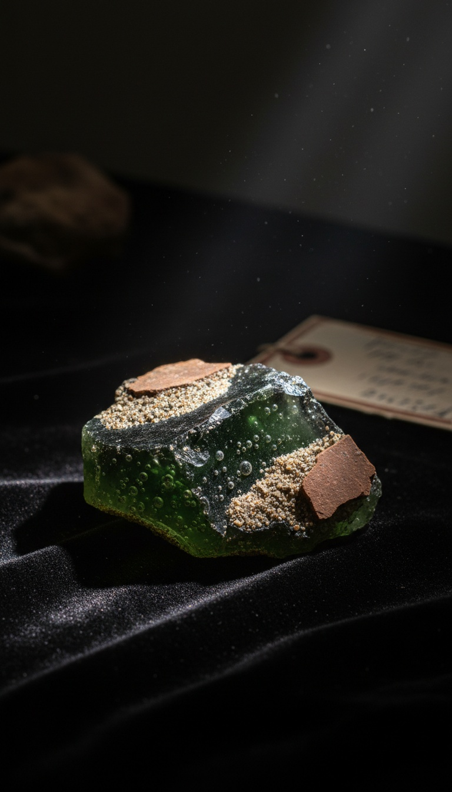

Every archaeologist who digs the Dead Sea basin hits the same layer, and it is not ash. It is glass. Vitrified sand, shocked quartz, sulfur pellets fused at temperatures no campfire, no city fire, no volcano in the region has ever produced. Sodom and Gomorrah were not burned. They were flash-melted from above, and the numbers coming out of the labs put the heat source somewhere past 2,000 degrees Celsius.
Genesis 19:24 is specific about the direction. Brimstone and fire, out of heaven, downward. Not up from the ground like a volcano. Not sideways like an earthquake fissure venting gas. Down. For three thousand years that detail read like theology. Then a team of fifteen scientists cut into a mound in Jordan and found the physics sitting exactly where the text said it would be.

The Mound That Would Not Stop Melting
Tall el-Hammam sits on the eastern edge of the Jordan Valley, eight miles northeast of the Dead Sea, and Dr. Steven Collins of Trinity Southwest University has been excavating it since 2005. What his teams kept pulling out of one specific stratum made no archaeological sense. Pottery sherds with their outer surfaces melted into glass while the clay beneath stayed unfired. Mudbrick fragments bubbled like lava foam. Chunks of building plaster turned to a green glassy melt. Fire destroys a city from the inside out over hours. This destruction came from one direction, in seconds, and it came in hot enough to boil ceramic.
The 2021 Paper That Put Numbers on the Fire
In September 2021, twenty-one researchers including earth scientist James Kennett of the University of California, Santa Barbara published the site analysis in Scientific Reports, a Nature portfolio journal. The receipts stack fast. Shocked quartz, the diagnostic fingerprint of extreme pressure found at nuclear test sites and asteroid craters. Melted zircon crystals, which require sustained temperatures above 1,500 degrees Celsius. Spherules of melted iron and silica raining through the destruction layer like frozen droplets of burning sky. The paper dated the event to roughly 1650 BC and calculated peak temperatures in excess of 2,000 degrees. Human bone in the layer was found fragmented and pulled apart, skeletons interrupted mid-posture. Whatever arrived over that city gave the people inside it no time to fall down.
We Have Manufactured This Exact Glass Once Before
On July 16, 1945, the Trinity device detonated over the New Mexico desert near Alamogordo and fused the sand beneath it into a green mineral we had to invent a name for. Trinitite. Specimens sit today in the Smithsonian National Museum of Natural History in Washington. Put a piece of trinitite next to the melted material from Tall el-Hammam and you are looking at siblings. Same glassy fusion, same spherule formation, same instant thermal pulse frozen into silica. The only confirmed processes on Earth that produce this signature are nuclear detonations and cosmic impacts. There was no crater at Tall el-Hammam. Hold that detail. It matters more than anyone wants it to.
A pillar of salt is what a body becomes when thermal radiation flash-crystallizes the sodium in living tissue. Lot's wife was not a metaphor. She was a casualty report.
The Salt Does Not Lie
The strangest number in the 2021 paper is the salt. The destruction layer at Tall el-Hammam carries a salt concentration spiking to roughly four percent, and the contamination was severe enough that the entire lower Jordan Valley, one of the most fertile agricultural zones in the ancient Near East, was abandoned for centuries afterward. One hundred twenty settlements, emptied. The text remembers this too. Lot's wife looks back at the flash and becomes a pillar of salt. On the southwest shore of the Dead Sea, a salt formation on Mount Sodom still carries her name, and guides have pointed to it since the Roman historian Josephus wrote that he personally saw it standing in the first century. The event salted the earth and salted the people, and the mechanism that does both at once is a high-energy thermal pulse over a hypersaline basin. The story kept the physics intact for three millennia while the institutions called it a fable.
The Airburst Explanation Breaks Its Own Math
The Scientific Reports team attributes the event to a Tunguska-class cosmic airburst, a space rock detonating in the atmosphere the way one did over Siberia on June 30, 1908. Take that explanation seriously for one paragraph, because it dies on its own numbers. Tunguska hit the emptiest forest on the planet. The 1650 BC event detonated directly above the largest, wealthiest urban center in the southern Levant, at the precise altitude that maximizes thermal damage, leaving no crater and no recovered fragment of the impactor. Not one meteorite. The team searched. Random rocks fall on random coordinates, and the odds of a once-in-thousands-of-years airburst choosing the one valley dense with cities, out of the entire barren Near East, are the kind of odds that get you thrown out of a casino. Precision is not what falling rocks do. Precision is what targeting does.
The Glass Trail Runs Through Three Continents
Tall el-Hammam is not alone in the record. Scotland holds more than sixty hilltop forts with ramparts fused into glass, sites like Tap o' Noth in Aberdeenshire and Craig Phadrig above Inverness, stone walls melted at temperatures over 1,000 degrees that no experimental archaeologist has fully reproduced with wood fires at scale. At Mohenjo-daro in the Indus Valley, excavations begun under John Marshall in the 1920s turned up vitrified sherds and skeletons lying unburied in the streets. Three continents, one signature. Cities and strongholds, flash-heated past the melting point of stone, always attributed after the fact to whatever local cause the textbook needed. The signature is consistent because the instrument was consistent.
Read Genesis 19 again with the lab results open beside it. The observers arrive in the city the night before. The one family with a warning is moved outside the blast radius before dawn. The strike comes at sunrise, from above, at a temperature that matches a directed energy discharge, and the one person who turns to look at the flash dies exactly the way flash casualties die. That is not a morality tale. That is an operations log. Surveillance, extraction of assets, weapons discharge, battle damage assessment. The sequence is so procedural that the ancient scribes preserved the checklist without understanding they were copying one.
So the question was never whether something detonated over the Jordan Valley in 1650 BC. The glass settles that. The question is why the demonstration needed an audience, why the audience needed survivors, and why the survivors were told to walk away and never look back. A test needs observers to record the result. The result was recorded, and we have been reading it aloud in churches for three thousand years. Who was operating the platform, and what were they proving, and to whom? Drop your answer in the comments. The layer is still down there, and it is still glass.
Before you go
7 books the Vatican doesn't want you reading. Free PDF — the texts they cut, with sources. Joined by 140+ Inner Circle members.
No spam. Unsubscribe anytime.
Go deeper
The Hidden Canon, Vol. I — Enoch. Jubilees. Thomas. Mary. Judas. 90 pages, 14 chapters, every receipt cited. The books your Bible quietly removed.
Read the Canon →Books that informed this investigation
As an Amazon Associate, Hidden Epoch earns from qualifying purchases. Cost to you: nothing.
Research safely
The VPN we use to research without being tracked. First 3 months free.
Get NordVPN →